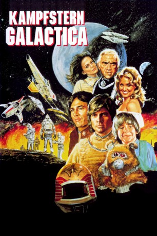
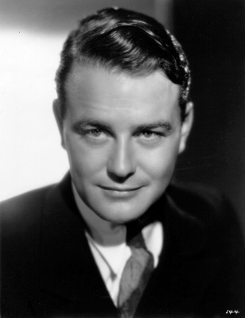
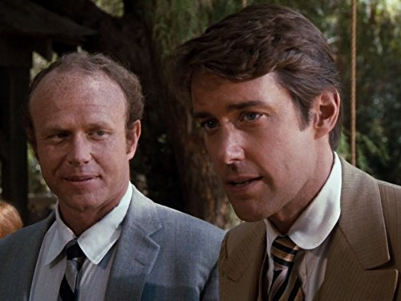
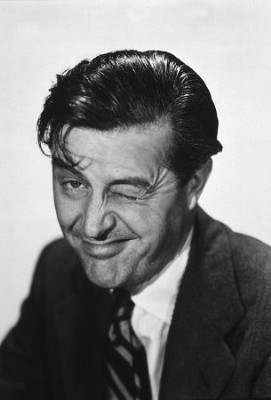

#6006 Kampfstern Galactica
Alternativ: Battlestar Galactica
 
 IMDB-Wertung: 6.8 / 10
IMDB-Wertung: 6.8 / 10  Metascore: 0
Metascore: 0 
Endlich soll es Frieden zwischen den Menschen in einer fernen Galaxie und den kriegerischen, roboterähnlichen Cylonen geben. Doch die Friedensgespräche nutzen die Cylonen zum finalen und vernichtenden Angriff gegen die Menschen. Nur ein einzelnes Kriegsraumschiff, die "Galactica", unter Kommando von Adama, der auch der letzte Überlebende des Zwölferrats ist, überlebt diesen Angriff. Zusammen mit 220 Transportschiffen, die die letzten Überlebenden der Kolonien beherbergen, versucht man nun die letzte und weit entfernte Kolonie zu suchen, in der es noch Menschen gibt: Die Erde...
Jahr: 1978
Dauer: 124 Minuten
FSK: 12
Land: USA Studio: ABCTonspuren:
Untertitel: Deutsch,
Auflösung: 1080p (1920x1040) Größe: 10076 MB
Genre: Action, Sci-Fi, Abenteuer
Regisseur: Richard A. Colla, Alan J. Levi
Drehbuch: Jim Thomas
Soundtrack:
Darsteller:
- Richard Hatch als Captain Apollo
- Dirk Benedict als Lieutenant Starbuck
 Lorne Greene als Commander Adama
Lorne Greene als Commander Adama- Herbert Jefferson Jr. als Lieutenant Boomer
- Noah Hathaway als Boxey
- Terry Carter als Colonel Tigh
-  Lew Ayres als President Adar
- Wilfrid Hyde-White als Sire Anton
 John Colicos als Count Baltar
John Colicos als Count Baltar- Laurette Spang als Cassiopeia
-  John Fink als Dr. Paye
- Jane Seymour als Serina
-  Ray Milland als Sire Uri
 Ed Begley Jr. als Ensign Greenbean
Ed Begley Jr. als Ensign Greenbean- Rick Springfield als Lieutenant Zac
- Sarah Rush als Flight Corporal Rigel
 Patrick Macnee als Imperious Leader , uncredited
Patrick Macnee als Imperious Leader , uncredited- Maren Jensen als Lieutenant Athena
- Tony Swartz als Flight Sergeant Jolly
- Randi Oakes als Blonde Taurus
- Norman Stuart als Statesman
- David Greenan als Flight Officer Omega
- David Matthau als Operative
- Chip Johnson als First Warrior
- Geoffrey Binney als Second Warrior
- Paul Coufos als Pilot
- Bruce Wright als Deck Hand
- Paula Crist als Ovion , uncredited
- Myrna Matthews als Space Angel , uncredited
- Marti McCall als Space Angel , uncredited
- Lee Michaels als Galactic Warrior , uncredited
- Carolyn Willis als Space Angel , uncredited
Datei: X:\HD-Serien\Kampfstern Galactica\Kampfstern Galactica (1978, FSK12, 1920x1040).mkv seit 20.04.2017
Festplatte: HD Serien(I-ST)
 Es gibt insgesamt 182 Filme in der Gruppe 'HD-Serien'
Es gibt insgesamt 182 Filme in der Gruppe 'HD-Serien'